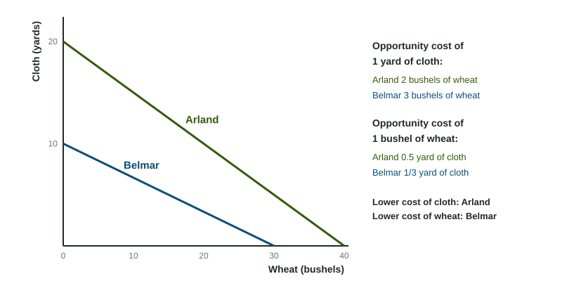

Comparative Advantage and Gains from Trade
Absolute advantage is producing more with the same resources; comparative advantage is producing at a lower opportunity cost.
Part 1 · Hook
Why this matters
Part 2 · Before you start
What this builds on
Part 3 · Prerequisite check
Quick check before you start
1. A worker can make 24 shirts or 8 hats in a day. Making one hat costs
- 3 shirts
- 8 shirts
- one third of a shirt
- 24 shirts
Show the answer
Opportunity cost per unit is what is given up divided by what is gained: 24 / 8.
- Correct: 3 shirts:
- 8 shirts:
- one third of a shirt:
- 24 shirts:
2. A straight-line PPC shows
- constant opportunity cost
- increasing opportunity cost
- idle resources
- growth
Show the answer
A straight line has the same slope, so each unit costs the same.
- Correct: constant opportunity cost:
- increasing opportunity cost:
- idle resources:
- growth:
Part 4 · See it
See it first

Part 5 · Step by step
How it works, step by step
- Two countries have different opportunity costs for the same goodseach has the comparative advantage in the good it makes at the lower cost
- Each country specializes in its comparative advantagetheir combined output of both goods rises
- They trade at terms between their two opportunity costseach gets the other good for less than it costs to make at home
- Both gain from tradeeach can consume a combination outside its own PPC
Part 6 · Key ideas
Key ideas
- Absolute advantage: more output from the same resources (or fewer resources per unit). Comparative advantage: the lower opportunity cost.
- Output data (units per worker): the cost of one good is the other good's output divided by its own. Input data (hours per unit): divide its own hours by the other good's hours.
- A country can have the absolute advantage in both goods, but the comparative advantage in only one.
- Terms of trade help both sides only when they lie between the two opportunity costs.
Part 7 · Misconception
A common mistake
The wrong idea: A country that is better at making everything has nothing to gain from trade.
What actually happens: Gains from trade come from comparative advantage, not absolute advantage. Even the more productive country gains by making the good with its lower opportunity cost and buying the other at a price below its own cost.
Part 8 · Check yourself
Check yourself
Exam-style questions. Anything you miss goes into your review queue.
Data
Shirts and hats: output per worker
| Country | Shirts per worker per day | Hats per worker per day |
|---|---|---|
| Marnovia | 24 | 8 |
| Delmont | 12 | 6 |
1. Using the table, what is Marnovia's opportunity cost of making one hat, in shirts?
Type a number. A four-function calculator is allowed, as on the exam.
Show the answer
A Marnovian worker who makes 8 hats gives up 24 shirts, so one hat costs shirts.
- Answer: 3
2. Which country has the absolute advantage in hats?
- Delmont, because it has the lower opportunity cost of making hats
- Marnovia, because one worker makes 8 hats a day to Delmont's 6
- Delmont, because it makes fewer shirts per worker
- Neither, because both countries make hats
Show the answer
Absolute advantage means more output from the same resources: 8 hats per worker beats 6.
- Delmont, because it has the lower opportunity cost of making hats: Lower opportunity cost is comparative advantage, not absolute advantage.
- Correct: Marnovia, because one worker makes 8 hats a day to Delmont's 6: Right: more hats from one worker.
- Delmont, because it makes fewer shirts per worker: Making fewer shirts does not mean making more hats.
- Neither, because both countries make hats: Absolute advantage compares how much each makes, and Marnovia makes more.
3. Which country has the comparative advantage in hats?
- Delmont, because a hat costs it 2 shirts and costs Marnovia 3
- Marnovia, because each of its workers makes more hats per day
- Marnovia, because it makes more of both goods
- Delmont, because it makes fewer shirts
Show the answer
Comparative advantage is the lower opportunity cost. A hat costs Delmont shirts and Marnovia 3 shirts.
- Correct: Delmont, because a hat costs it 2 shirts and costs Marnovia 3: Right: 2 shirts is less than 3.
- Marnovia, because each of its workers makes more hats per day: More hats per worker is absolute advantage.
- Marnovia, because it makes more of both goods: A country can have the absolute advantage in both goods but the comparative advantage in only one.
- Delmont, because it makes fewer shirts: The comparison is of opportunity costs, not of shirt output alone.
4. If both countries specialize by comparative advantage, what does each produce?
- Marnovia makes both, because it is better at both
- Marnovia makes hats and Delmont makes shirts
- Each makes half of each good
- Marnovia makes shirts and Delmont makes hats
Show the answer
A shirt costs Marnovia , a third of a hat, and Delmont half a hat, so Marnovia specializes in shirts and Delmont in hats.
- Marnovia makes both, because it is better at both: Specializing by absolute advantage misses the gains from trade.
- Marnovia makes hats and Delmont makes shirts: This reverses the comparative advantages.
- Each makes half of each good: Splitting production gives up the gains from specializing.
- Correct: Marnovia makes shirts and Delmont makes hats: Right: each makes the good with its lower opportunity cost.
5. Which terms of trade would benefit both countries?
- 1 hat for 1.5 shirts
- 1 hat for 3.5 shirts
- 1 hat for 2.5 shirts
- 1 hat for 4 shirts
Show the answer
The price of a hat must lie between the two opportunity costs, 2 shirts (Delmont) and 3 shirts (Marnovia). Delmont sells hats for more than 2 shirts; Marnovia buys them for less than 3.
- 1 hat for 1.5 shirts: Delmont gives up 2 shirts to make a hat, so selling it for 1.5 loses shirts.
- 1 hat for 3.5 shirts: Marnovia can make a hat for 3 shirts itself, so it will not pay 3.5.
- Correct: 1 hat for 2.5 shirts: Right: 2.5 is between 2 and 3.
- 1 hat for 4 shirts: Marnovia can make a hat for 3 shirts itself, so it will not pay 4.
6. A surgeon types faster than her assistant but pays the assistant to do her typing. Which idea explains this?
- Absolute advantage: the assistant types faster than the surgeon
- Scarcity: there is not enough typing to go around
- Comparative advantage: the assistant's opportunity cost of typing is lower
- Increasing opportunity cost: typing gets harder the more she does
Show the answer
The surgeon has the absolute advantage in typing, but her opportunity cost of typing (surgery not done) is much higher, so the assistant has the comparative advantage in it.
- Absolute advantage: the assistant types faster than the surgeon: The surgeon types faster, so she has the absolute advantage in typing.
- Scarcity: there is not enough typing to go around: The choice is about who should type, not a lack of typing.
- Correct: Comparative advantage: the assistant's opportunity cost of typing is lower: Right: the lower opportunity cost belongs to the assistant.
- Increasing opportunity cost: typing gets harder the more she does: Nothing suggests her typing gets harder; her time is simply worth more in surgery.
7. Can one country have the comparative advantage in both of two goods?
- Yes: if it has the absolute advantage in both
- No: a lower cost of one good means a higher cost of the other
- Yes: if it has more workers than the other country
- Yes: if its PPC lies farther from the origin
Show the answer
The opportunity cost of one good is the reciprocal of the opportunity cost of the other, so a lower cost of one means a higher cost of the other.
- Yes: if it has the absolute advantage in both: Absolute advantage in both is possible; comparative advantage in both is not.
- Correct: No: a lower cost of one good means a higher cost of the other: Right: the two costs are reciprocals.
- Yes: if it has more workers than the other country: More workers can give an absolute advantage, not a comparative advantage in both.
- Yes: if its PPC lies farther from the origin: A larger PPC shows more output, not lower opportunity costs of both.
Part 9 · Summary
Summary
Part 10 · Up next
What comes next
Part 11 · Connections